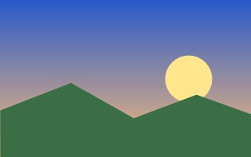

Este documento fica em /Users/Visitante/Documentos/Exemplo.html.
Ele tem negrito, itálico, sublinhado, riscado, texto colorido,
marca-texto, H2O, E = mc2 e letras pequenas.
Índice: Listas · Tabela · Imagens · Formulário · Bem-vindo.txt · Ajuda do mOS
1. Listas
- Item com marcador
- Sub-item (círculo)
- Sub-sub-item (quadrado)
- Sub-item (círculo)
- Outro item com um link para a pasta Imagens
- Entidades: & < > © ® € € ☃ éção — …
- Primeiro passo
- Segundo passo
- Terceiro passo
- Romano quatro
- Romano cinco
- HTML
- Linguagem de marcação das páginas.
- CSS
- Folhas de estilo em cascata.
2. Tabela
| Planeta | Tipo | Diâmetro (km) | Luas |
|---|---|---|---|
| Mercúrio | Rochoso | 4.879 | 0 |
| Vênus | Rochoso | 12.104 | 0 |
| Terra | Rochoso | 12.742 | 1 |
| Júpiter | Gasoso | 139.820 | 95 |
| Total de luas listadas | 96 | ||
Tabela no estilo antigo, com atributos:
| Atalho | Ação |
|---|---|
⌘T | Nova aba |
⌘L | Barra de endereços |
3. Imagens


À esquerda, um PNG com transparência e cantos arredondados; ao lado, um JPEG reduzido; por fim, o texto alternativo de uma imagem que não existe.
4. Citação e código
“A simplicidade é o último grau de sofisticação.” — atribuída a Leonardo da Vinci
int main(void) {
printf("Olá, mOS!\n"); /* espaços preservados */
return 0;
}
Alinhado à direita com style="".
5. Formulário
Voltar ao topo · example.com (rede)
Feito para o mOS © 2026 — sem JavaScript, com muito carinho.